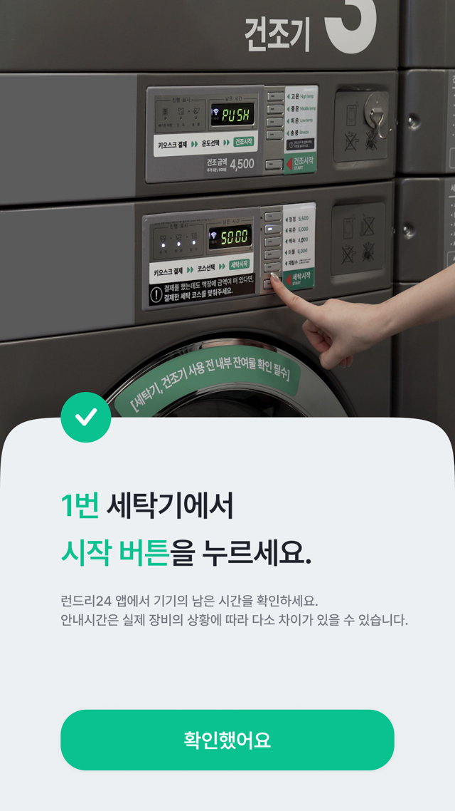
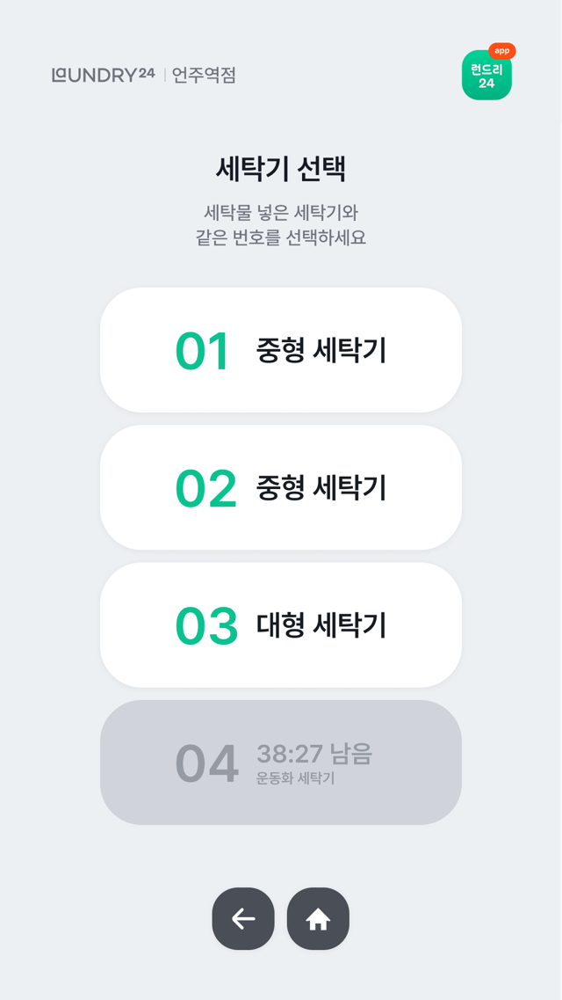
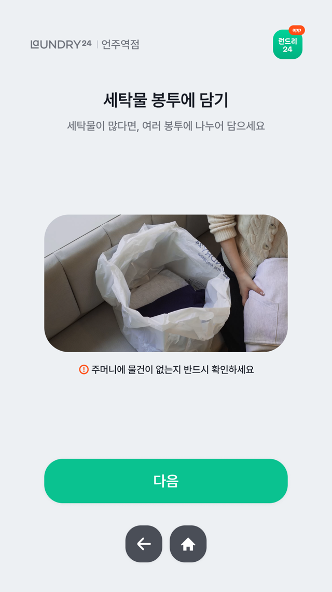
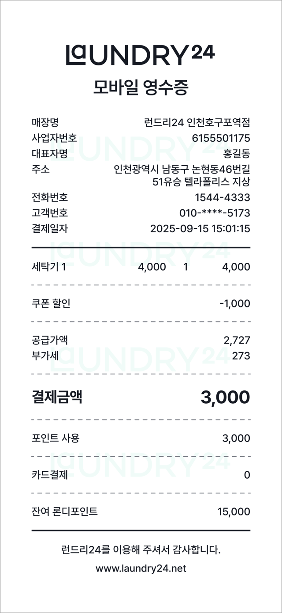

v2.0 무엇이 달라졌나요?
| 구분 | 주요 개선 항목 | v1.0 | v2.0 |
|---|---|---|---|
| 사용성 혁신 | 기기 연동 및 조작 | 코스 중복 선택 | 결제 후 "시작" 버튼만 클릭 |
| 남은 시간 정확도 | 평균 오차 10분 이상 | 오차 1분 미만 실시간 안내 | |
| 유저 액션 가이드 | 안내 부족/이탈 발생 | 정확한 유저액션 유도 가이드 | |
| 운영 최적화 | 영수증 발급 | 종이 출력 (장애 요인) | 디지털 모바일 영수증 |
| 장애 대응 (심야) | 대응 불가/고객 불편 | 고객 주도 '자체 초기화' |
REAL-TIME SYNC
1. 실시간 기기 연동
LG API 연동을 통해 키오스크에서 결제한 코스 정보가 장비에 즉시 전송됩니다. 이제 고객은 세탁기 앞에서 "시작" 버튼만 누르면 즉시 작동됩니다.


PRECISION ALERTS
2. 남은 시간 정확도 개선
가장 중요한 기능인 "남은 시간 알림"이 획기적으로 개선되었습니다.
- ✔ 기존 10분 이상 발생하던 오차를 1분 미만으로 줄였습니다.
- ✔ 실시간 장비 상태 동기화로 고객의 대기 시간을 명확하게 관리합니다.
UX IMPROVEMENT
3. 정확한 유저액션 유도
정확한 유저액션을 유도하여 처음 이용하는 고객의 이탈을 막고 사용성을 개선했습니다.
- ✔ 드라이클리닝 맡기기/찾기 과정의 단계별 직관적 UI 가이드 적용
- ✔ 접수증 누락 등 반복되던 사용자 오류를 최소화했습니다.


DIGITAL RECEIPT
4. 디지털 모바일 영수증
종이 없는 스마트한 매장을 지향합니다. 결제 즉시 스마트폰으로 영수증이 발급되어 편리함과 효율성을 모두 잡았습니다.
영수증 용지 부족으로 인한 서비스 중단 에러를 근본적으로 차단했습니다.
SELF-SERVICE RECOVERY
5. 고객 주도 장애 대응
심야 시간대 장애에도 멈추지 않는 서비스를 경험하세요.
기기 오류 발생 시 고객이 직접 키오스크에서 '드라이스테이션 자체 초기화'를 진행하여 즉시 문제를 해결할 수 있습니다.